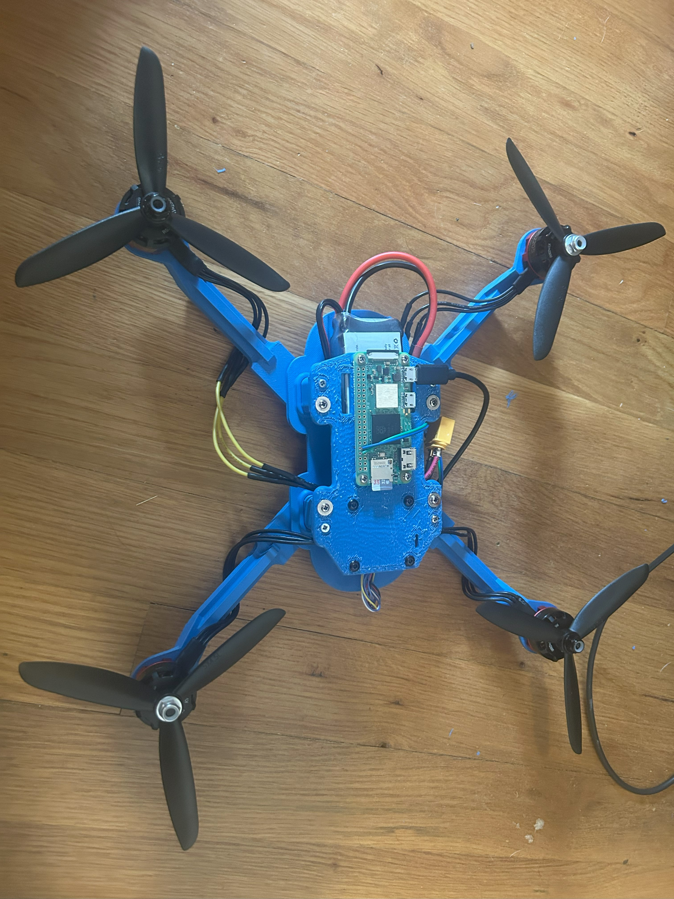

Overview
Robin, named after Kermit the Frog's nephew, is a compact, fully custom-designed quadcopter built as a learning platform for BetaFlight and advanced control schemes. Powered by an F7 flight controller-ESC stack and a Raspberry Pi Zero W 2 as a companion computer, Robin was designed to test how low-cost I could prototype a quadcopter while maintaining a strong frame with decent capabilities.

Frame Design
I used SolidWorks to design the frame, ensuring all components fit within a streamlined, 3D-printable chassis. One notable design feature is the use of rotor arms as critical structural standoffs for the top and bottom frame layers, simplifying the component count and reducing weight and fastener usage.
Software Integration
The F7 runs BetaFlight, requiring a different communication approach than the MAVProxy code I wrote for Kermit. I learned the MultiWii Serial Protocol to send direct RC channel values from the Pi to the F7. This involved writing Python scripts that enable limitless future development — updates are as simple as SSH-ing into the Pi and uploading a new script, rather than reflashing BetaFlight firmware.
Fabrication & Iteration
The frame was 3D-printed at the Invention Studio, with iterative prototypes to perfect structural integrity and component fit. I adjusted wall thicknesses and motor mounts to withstand crash impacts. I'm currently designing a handheld remote control to communicate with the Pi — see the STM Remote page for more details.

Results
Robin successfully serves as a testbed for BetaFlight and experimental control schemes, with stable flight performance during initial tests. The compact, 3D-printed frame proved durable, surviving multiple crashes, and the Pi-based control system allowed precise RC channel manipulation.